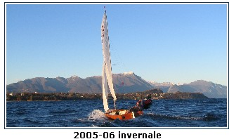
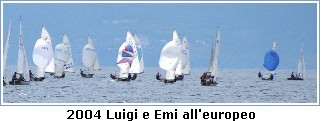
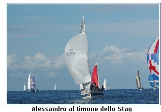

|
Con un FJ della scuola poco attrezzato e pesante Luigi e Alessandro regatarono affrontando le leggere brezze locali lasciando fior di campioni indietro fino alla boa di bolina ma perdendo posizioni sui lati di poppa per un spinnaker tagliato  male e per l'eccessivo peso dello scafo. Tutti i concorrenti furono impressionati e un noto campione nazionale venne a controllare la barca dei fratelli Candela di persona sollevando la prua per capire se c'era un trucco nel peso.
Dopo questa esperienza Luigi s'impegn� insieme alla moglie Emi in questa classe raggiungendo risultati brillanti. Tra questi un 3� assoluto (1� degli Italiani) al Campionato Nazionale Open 2004 ad Albenga, 10� al Campionato Europeo open in Croazia, 8� degli europei, primi dei master.
 Nella seconda met� degli anni '90 Alessandro divent� armatore di un piccolo yacht da regata lo Stag 29 in societ� con l'amico Antonio Mercadante, ex allievo Optimist di Luigi
Nello stesso periodo Luigi trov� e compr� una deriva della classe Dinghy 12 piedi che si trovava in stato di semi abbandono sul lago di Garda dove oggi vive.
Nel '96 Alessandro e Luigi s'impegnarono nel restauro di questo vecchio legno che alla fine torn� a navigare. Oggi questo Dinghy 12 piedi naviga nel Golfo di Mondello.
Alessandro ha vinto nel 2001 il Campionato Nazionale dei Dinghy 12 piedi Classici ed � stato tra i migliori degli italiani alle regate internazionali di Napoli nel 2007.
Alessandro e il suo equipaggio hanno avuto momenti di gloria con lo Stag 29 ai Campionati Invernali del Golfo di Palermo. Nonostante questa barca fosse tra le pi� piccole dei concorrenti ha dato filo da torcere alle pi� grandi - soprattutto con vento forte.
|